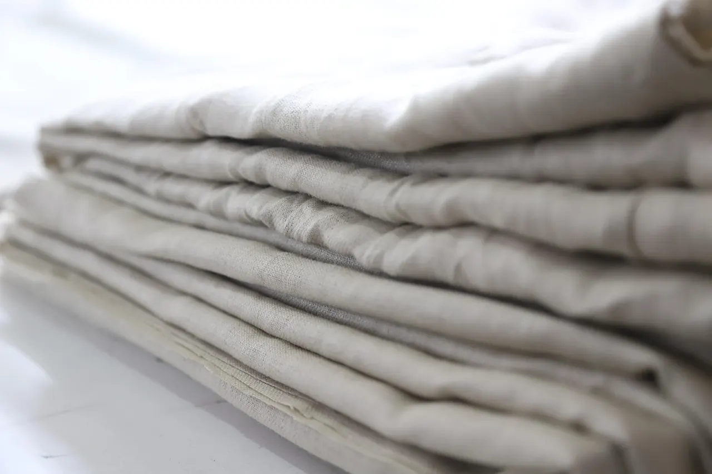

Yorgan yıkama ve bakım rehberi: yün, pamuk, silikon, tüy
Hangi yorgan makinede yıkanır, hangisi yıkanmaz? Havalandırma, kurutma, saklama ve güveye karşı koruma; dolguya göre tek tek.

Yorganın ömrü büyük ölçüde bakımına bağlı. Dükkâna gelen bozulmuş yorganların çoğunun hikâyesi aynı: yanlış yıkanmış, tam kurumadan kaldırılmış ya da nemli dolapta beklemiş. Aşağıda dolguya göre doğru bakımı özetledik. Her durumda önce ürünün etiketine bakın.
Yün yorgan
- Yıkamayın. Yün ılık su ve hareketle keçeleşir, bir daha kabarmaz.
- Kılıf ya da nevresimle kullanın, kılıfı yıkayın.
- Yılda 1–2 kez kuru bir günde gölgede, havadar yerde havalandırın. Doğrudan güneşte saatlerce bırakmak lifi yorabilir.
- Leke olursa yalnız yüz kumaşını nemli bezle silin.
- Birkaç yılda bir yenileme: yün açılır, kabartılır, yeni yüz geçirilir.
Pamuk yorgan ve yastık
- Dolgu yıkanmaz; ıslanırsa topaklanır ve içi geç kurur.
- Sabahları silkeleyip havalandırın; pamuk nemi tutar, bırakması için zaman gerekir.
- Topaklanma ve basıklık başladığında dükkânda atılıp yeniden dikilir.
Silikon, elyaf ve microfiber
- Etikette izin verilen sıcaklıkta (çoğunlukla 30–40 °C, bazıları 60 °C) hassas programda yıkayın.
- Çift kişilik yorganı küçük makineye sıkıştırmayın; iyi durulanmaz, deterjan kalır. Gerekirse çamaşırhaneye verin.
- Az deterjan kullanın, yumuşatıcıdan kaçının (lifleri kaplar).
- Tamamen kurutun. Kururken birkaç kez silkeleyin ki dolgu bir köşede toplanmasın.
Kaz tüyü
- Etikete göre kuru temizleme ya da özel programla yıkanır; tüyün içten tamamen kuruması gerekir, yoksa koku yapar.
- Her sabah silkeleyin, tüy havalansın.
Saklama
- Kaldırmadan önce yorganın tamamen kuru olduğundan emin olun.
- Pamuklu bez torbada saklayın; naylon torba nemi hapseder.
- Yün yorganı vakumla uzun süre sıkıştırmayın.
- Güveye karşı naftalin yerine lavanta kesesi ya da sedir parçaları kullanabilirsiniz; dolabı yılda bir boşaltıp havalandırın.
Ne zaman yenilemeli, ne zaman değiştirmeli?
Yün ve pamukta yenileme genellikle yeni almaktan daha ekonomiktir ve yorganın ömrünü uzatır. Silikon ve elyafta ise kabarıklık kaybolup topaklanma başladığında değiştirmek gerekir. Kararsızsanız yorganınızın fotoğrafını WhatsApp'tan gönderin, usta ne yapılabileceğini söylesin. Yenilemenin nasıl yapıldığını hallaç ve yenileme yazımızda anlattık.
Sorunuz mu var?
Yatağınızın ölçüsünü, odanızın ne kadar sıcak olduğunu ya da yorganınızın fotoğrafını gönderin; Ramazan usta önerisini söylesin.
Sık sorulan sorular
Yün yorgan makinede yıkanır mı?
Hayır. Yün keçeleşir. Kılıfla kullanın, havalandırın, birkaç yılda bir dükkânda yeniletin.
Silikon yorgan kaç derecede yıkanır?
Çoğu model 30–40 °C, bazı modeller 60 °C. Etiketteki sınıra uyun ve tamamen kurutun.
Yorganı güneşe sermek doğru mu?
Kısa süreli havalandırma iyidir; yün ve tüyü saatlerce doğrudan güneşte bırakmak lifleri yorabilir. Gölgede, havadar yer tercih edin.
Yorganı vakumlu torbada saklayabilir miyim?
Sentetik yorganlar için kısa süre olabilir; yün ve tüy için uzun süreli vakum önerilmez.
Yazıda geçen ürünler

Yün açılır, atılıp kabartılır, eksiği tamamlanır, yeni yüzle yeniden dikilir.

Silikonla kaplanmış boşluklu polyester elyaf: hafif, yıkanabilir, uygun fiyatlı.


Kaynaklar
- International Wool Textile Organisation (IWTO), Caring for wool.
- Ürün bakım etiketleri: TS EN ISO 3758 (tekstil bakım etiketleme sembolleri).
Bu yazı genel bilgilendirme amaçlıdır; tıbbi tavsiye değildir. Sağlıkla ilgili şikâyetleriniz için hekiminize danışın.